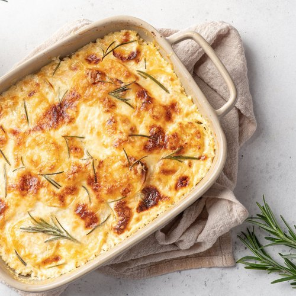

Gratin Dauphinois

Patates � la cr�me gratin�es au four
Recette familiale invent�e par les paysans afin de se r�chauffer l'hiver, c'est d�sormais un excellent plat mang� par tous
Ingredients
- 1.5kg de pommes de terre
- 2 gousses d'ail
- 100g de beurre
- 1L de lait
- Un peu de muscade
- Sel
- Poivre
- 30cl de cr�me
Étapes
- Eplucher, laver et couper les pommes de terre en rondelles fines (NB : ne pas les laver APRES les avoir coup�es, car l'amidon est n�cessaire � une consistance correcte).
- Hacher l'ail très finement.
- Porter à ébullition dans une casserole le lait, l'ail, le sel, le poivre et la muscade puis y plonger les pommes de terre et laisser cuire 10 à 15 min, selon leur fermeté.
- Préchauffer le four à 180°C (thermostat 6) et beurrer un plat à gratin à l'aide d'une feuille de papier essuie-tout.
- Placer les pommes de terre égouttées dans le plat. Les recouvrir de crème, puis disposer des petites noix de beurre sur le dessus.
- Enfourner pour 50 min à 1 heure de cuisson. Utiliser le lait restant de la cuisson des pommes de terre pour faire une soupe ou une purée dans la foulée.